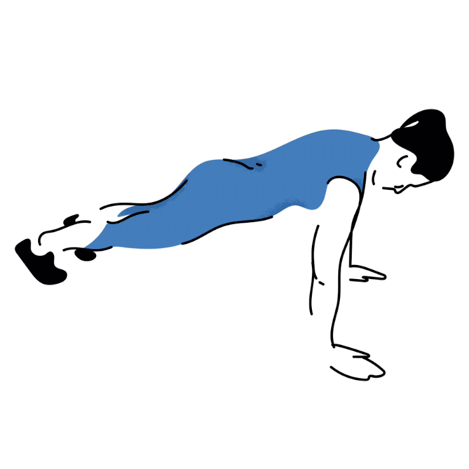
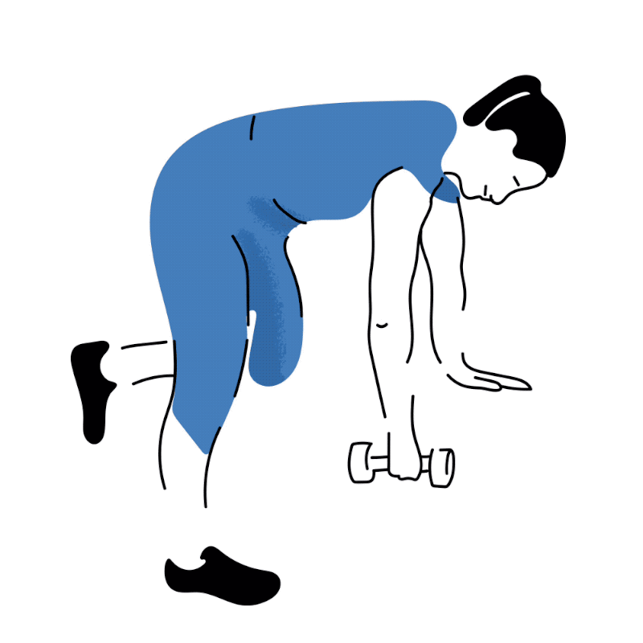
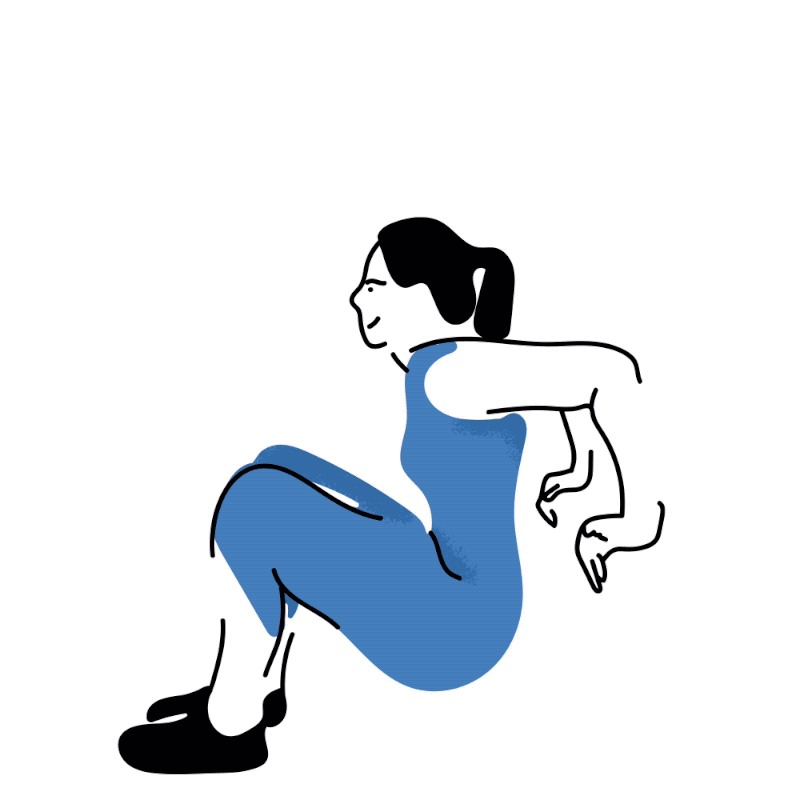
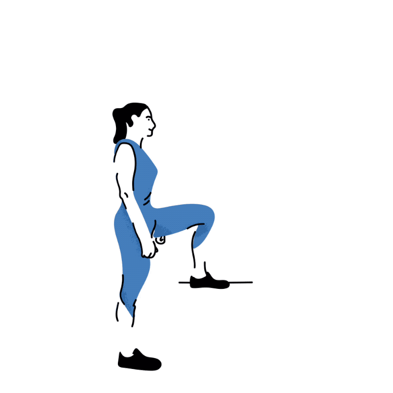
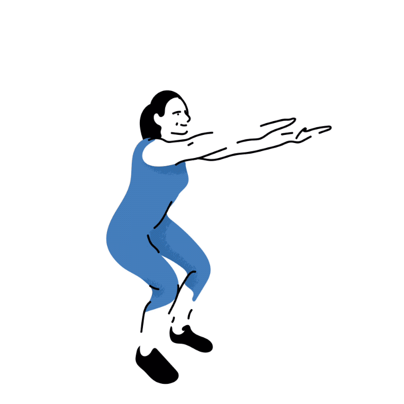
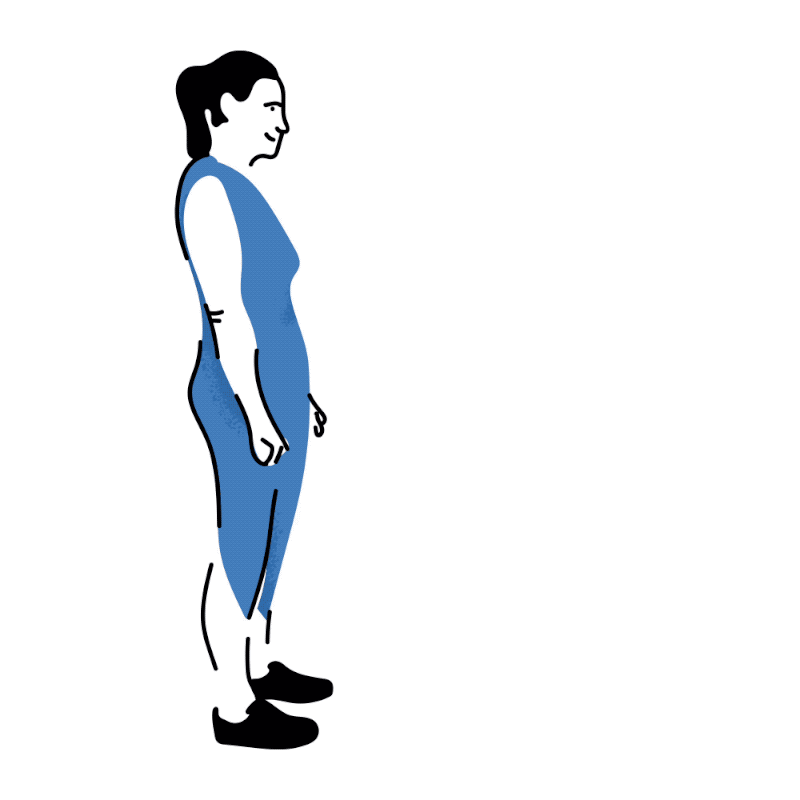
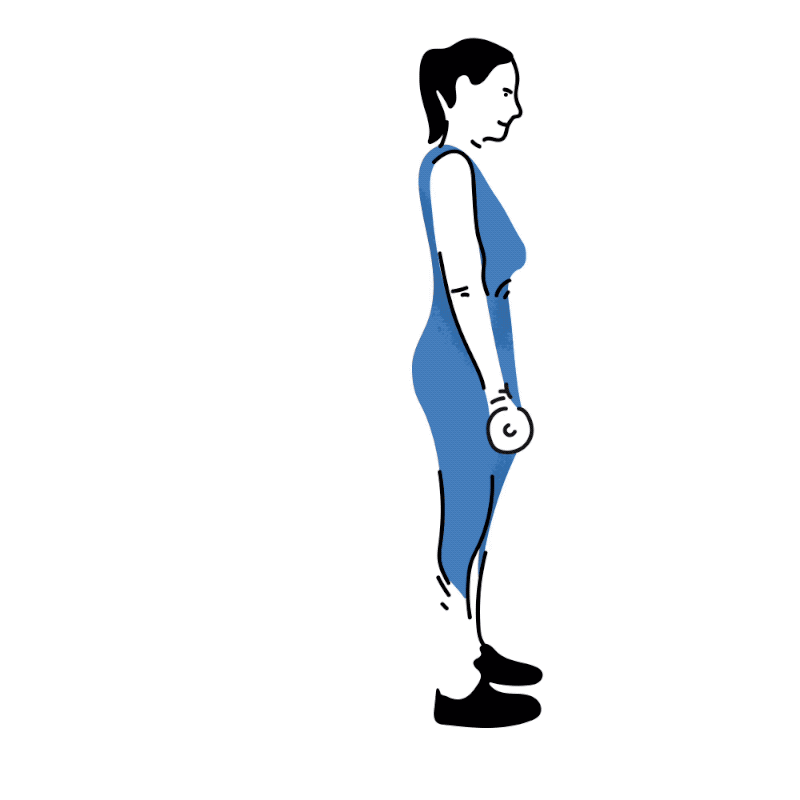
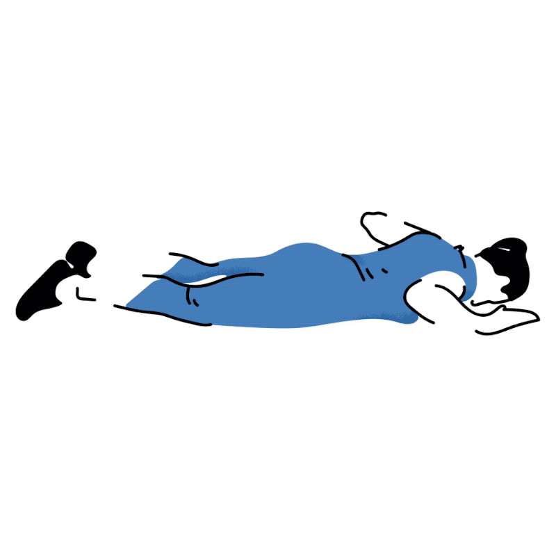
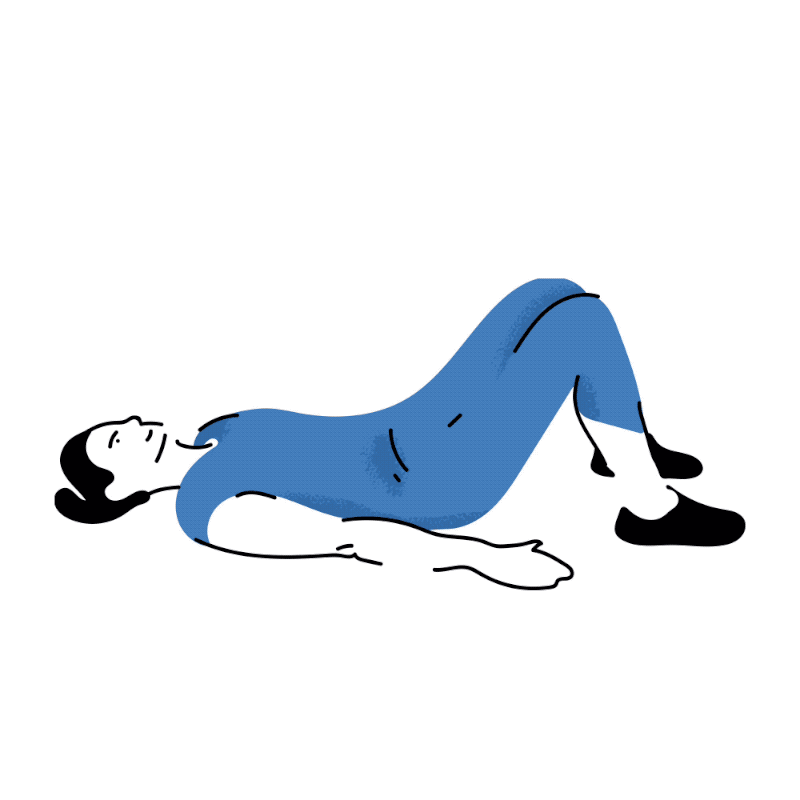
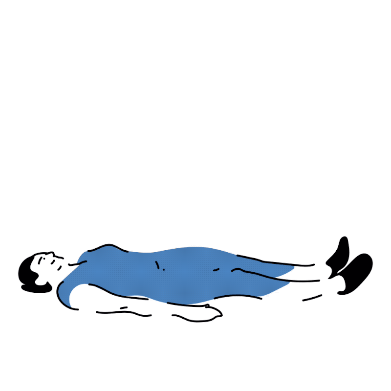

Використовуй це тренування для всього тіла, щоб почати краще бігати та уникнути травм.
Силове тренування може бути корисним для бігунів. По-перше, прокачані м'язи ніг додають сили під час бігу, по-друге,
зміцнення сухожиль і зв'язок допоможе уникнути травм. Готуючись до забігу Wings for Life World Run ми вирішили згадати кілька важливих вправ, які допоможуть показати кращі результати.
Силове тренування може бути корисним для бігунів. По-перше, прокачані м'язи ніг додають сили під час бігу, по-друге,
зміцнення сухожиль і зв'язок допоможе уникнути травм. Готуючись до забігу Wings for Life World Run, ми вирішили згадати
кілька важливих вправ, які допоможуть показати кращі результати.
Починай виконувати ці вправи, використовуючи лише вагу власного тіла, а з часом додавай вагу, з якою тобі буде комфортно
займатися.
Як виконувати ці вправи
Виконуй вправи у тому порядку, в якому вони розміщені в тексті, виділяючи 90 секунд на відпочинок між сетами та двохвилинну паузу перед кожним новим блоком вправ. Слідкуй за правильністю виконання: займайся перед дзеркалом або попроси когось оцінити твої рухи.
Вправа 1: Віджимання

Повтори сети: 10 повторів; 2 сети
Для чого: Зміцнення грудей, плечей і рук для покращення постави і рухів під час бігу.
- Ляж на підлогу обличчям вниз, розмістивши руки на рівні грудної клітини. Впирайся в підлогу пальцями ніг.
- Витисни тіло від підлоги за допомогою рук. Тримай тіло повністю прямим.
- Коли руки майже повністю випрямлені (не вивертай лікті), опусти тіло майже до підлоги. Повторюй далі.
Вправа 2: Піднімання гантелі

Повтори сети: 12 повторів на кожен бік; 2 сети
Для чого: Зміцнює верхню частину спини та груди.
- Постав ліве коліно і руку на підвищення. Верхню частину тіла тримай горизонтально.
- Тримай гантелю у витягнутій правій руці.
- Підніми ганетелю, тримаючи лікоть біля талії, а після цього опусти у вихідне положення.
Вправа 3: Віджимання для тріцепсу

Повтори і сети: 12 повторів ; 2 сети
Для чого: Зміцнює руки та плечі, що допомагає тримати пряме положення тіла під час бігу.
- Сядь, тримаючи долоні на краю лавки. Пальці мають виходити за її край.
- Підійми своє тіло за допомогою рук, згинаючи лікоть, а потім опустися. Знову витисни себе руками (тільки не допомагай собі ногами).
Вправа 4: Наступання

Повтори і сети: 10 повторів на кожен бік; 2 сети
Для чого: Пропрацьовує всі основні м'язи ніг, покращує силу під час бігу.
- Стань навпроти лавки або коробки (впевнись, що вона достатньо міцна для того, аби витримати твою вагу).
- Постав одну ногу на лавку або коробку та відштовхнись іншою ногою, щоб піднятися вгору. Тіло має бути прямим, а коліно − над щиколоткою. Стегна мають тягнутися вперед і вгору.
- Підніми ногу та зігни її в коліні. Повтори усе спочатку.
- Аби збільшити навантаження, візьми в руки гантелі.
5: Присідання

Повтори і сети: 15 повторів; 2 сети
Для чого: Посилює основні м'язи ніг, необхідні для бігу, та зменшує ризики травм. Покращує рухливість.
- Постав стопи трохи ширше стегон, пальці трохи розвернуті назовні.
- Опустися, розводячи коліна і стегна, ніби сідаєш на стілець.
- Тримайте коліна над щиколотками, а груди випрямленими. Відставляй таз назад.
- Опустися майже в сидяче положення, а потім витисни тіло вгору, натискаючи на п'яти. Повтори знову.
- Аби підвищити складність, тримай в руках гирі на рівні грудей.
Вправа 6: Ходьба випадами

Повтори і сети: 8 повторів на кожну ногу; 2 сети
Для чого: Покращує баланс кожної ноги для покращення координації під час бігу. Також збільшує довжину кроку, допомагаючи бігти швидше.
- Постав ноги на ширині плечей.
- Зроби широкий крок вперед, опусти тіло і заднє коліно до підлоги, але не торкайся до неї повністю.
- Тримай переднє коліно над щиколоткою, а тіло прямо.
- Відштовхнися ногою, що позаду, а передню постав назад у вихідне доложення.
- Повтори, змінюючи ногу.
Вправа 7: Тяга з однією ногою

Повтори і сети: 10 повторів на кожен бік; 2 сети
Для чого: Зміцнює сідниці і стегна та підвищує стабільність для зменшення ризику травм.
- Стань рівно з гантелею або гирею у правій руці.
- Відірви ліву ногу від підлоги та випрями позаду себе. Зігнися вперед на рівні стегон, тримаючи спину прямо, а праву руку витягненою до підлоги.
- Трохи зігни праве коліно.
- Піднось вагу майже до підлоги а спину тримай максимально близько до горизонтального положення, перш ніж повернутися до стартової позиції. Повтори з іншою ногою.
Вправа 8: Супермен або човник

Повтори і сети: 10 повторів; 2 сети
Для чого: Допомагає зміцнити середню та верхню частини спини для більшої стабільності та покращення якості бігу
- Ляж обличчям вниз, а руки тримай на рівні вух долонями вниз.
- Підніми груди і плечі від підлоги та зведи лопатки разом. Дивися у підлогу та не скручуй шию.
- Опустися в стартову позицію і повтори.
Вправ 9: Міст
 Повтори і сети: 15 повторів; 2 сети
Для чого: Спрямована на сідниці для покращення бігу.
- Ляж на спину, тримаючи руки по боках, а ступні на підлозі.
- Підніми вгору сідниці, щоб створити пряму лінію між стегнами, колінами і плечами.
- Тримай плечі на підлозі, щоб захистити шию.
- Затримайся у цій позиції на 2 секунди, опустися та повтори.
- Тримай руки вилягнутими над собою, виконуючи вправу, якщо хочеш збільшити навантаження.
Вправ 10: Піднімання ніг
Повтори і сети: 10 повторів; 2 сети
Для чого: Зміцнює суглоби стегон, які відповідають за підйом колін під час бігу. Також працює нижня частина пресу для більшої стабільності тіла.
- Ляж на спину, тримаючи руки по сторонах.
- Тримай ноги разом і підніми їх до вертикальної лінії.
- Повільно опусти їх на підлогу і повтори.
- Якщо хочеш трохи зменшити навантаження, піднімай ноги по-черзі.